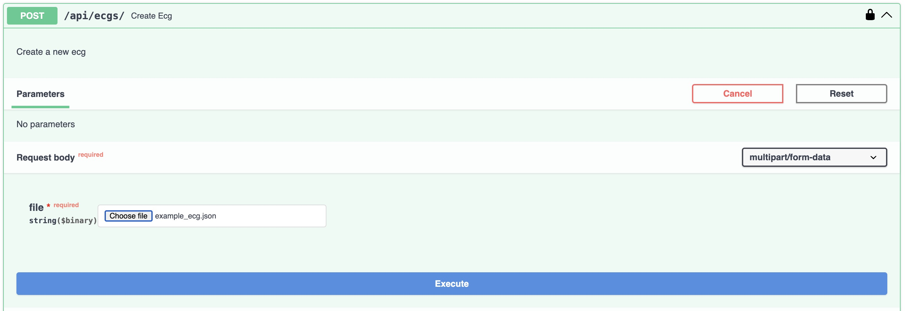
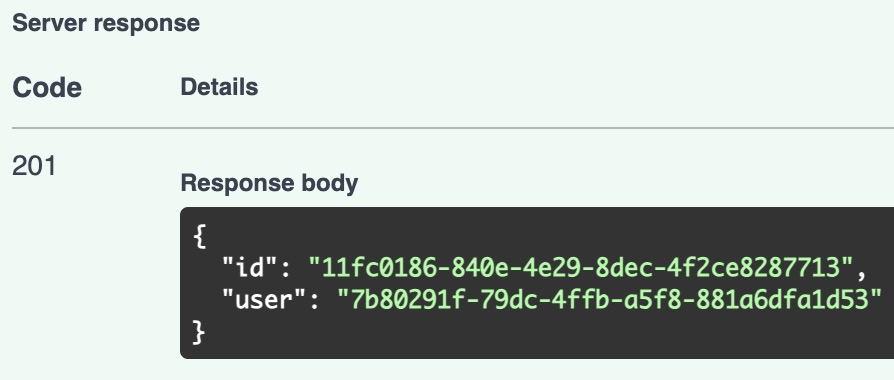
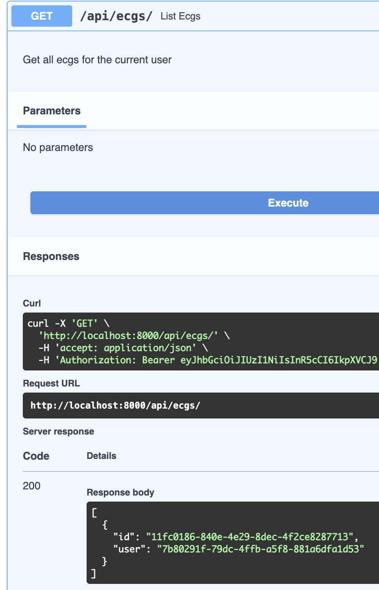

Upload ECG
To upload an ECG, you need to be logged in as a user. If you are not logged in, you can follow the instructions in the User login section.
Once you are logged in, go to http://localhost:8000/api/docs and click on the POST /ecgs/ endpoint. Then, fill in the form with the following data:
- file:
<file>

Once you click on the Execute button, you will see the response with the new ECG data.

Now you can list the ECGs and view the details of the new ECG.
List ECGs: http://localhost:8000/api/docs#/ECGs/list_ecgs_ecgs_get

Technical considerations
The API is designed to be performant and scalable. You can upload big JSON files, since the app uses a streaming approach to parse the data and store it in the database.
The JSON file is parsed in streaming using ijson library and the data is sent to the database in chunks. This way, the app can handle big files without consuming a lot of memory.
ECG Signal processors
Every time you upload an ECG, the app will first store the raw data in the database and then it triggers background tasks to process the data and store the results in the database.
Adding Signal processors
There is an abstract base class SignalProcessor that you can use to create new signal processors. You can find the base class in the ecg_backend.processors module.
To create a new signal processor, you need to create a new class that inherits from SignalProcessor and implement the process method. This method will receive the ECG data and should return the processed data.
There is no need to register the new processor in the app. The app will automatically find the new processor and trigger it when an ECG is uploaded.
In this case I opted to use introspection to find the processors to avoid more external dependencies, but this feature can also be implemented using the Observer design pattern.
NumCrossesZeroSignalProcessor
This processor calculates the number of times the signal crosses the zero line. You can find the implementation in the ecg_backend.processors.num_crosses_zero module.
The implementation uses a raw PostgreSQL query to calculate the number of times the signal crosses the zero line. It is a simple way to implement it, since the data is already stored in the PostgreSQL database, but in future implementations, we could use a more efficient way to calculate this value.